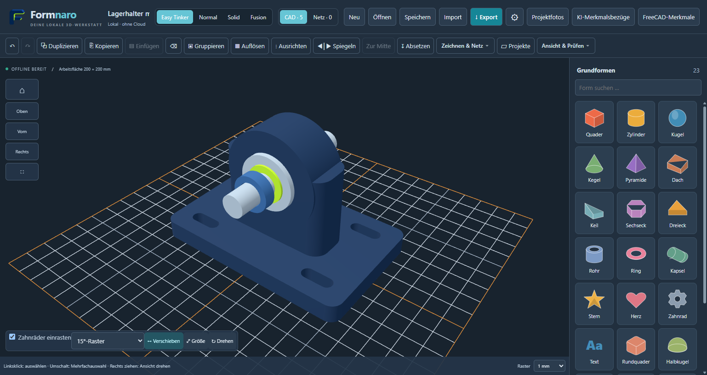
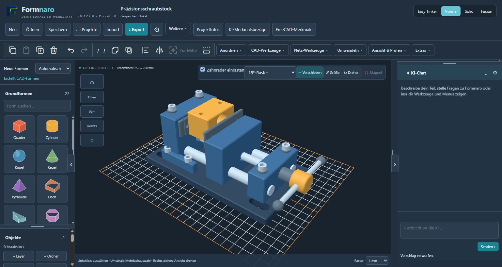
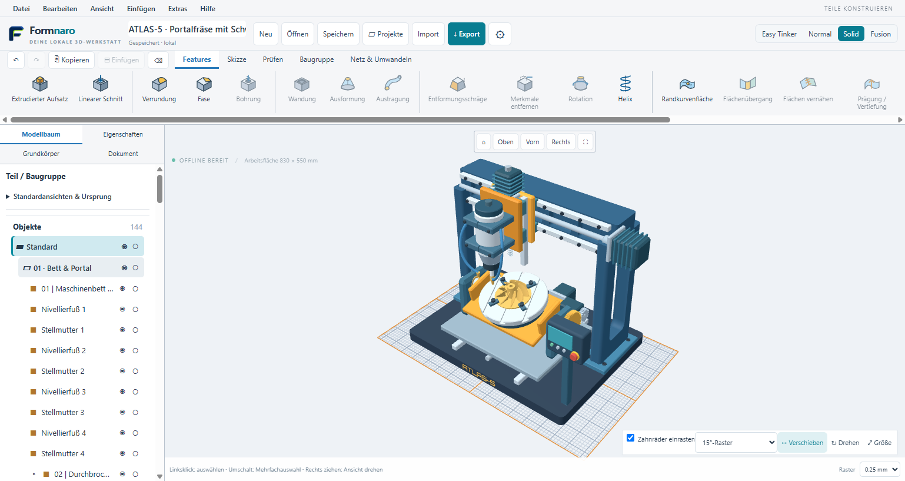
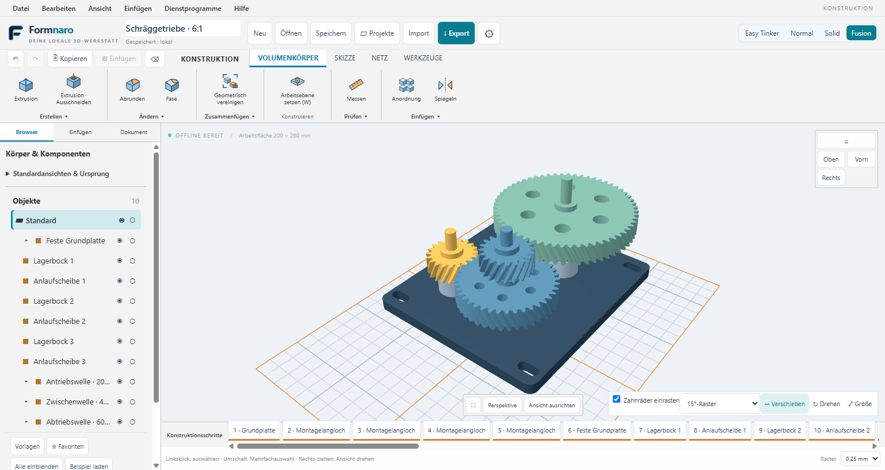

Vier Wege zur Konstruktion
Setze mit Easy Tinker Grundformen zusammen oder arbeite in Normal, Solid und Fusion mit detaillierteren Werkzeugen und Konstruktionsschritten.
Formnaro · Windows x64
Konstruiere Bauteile für Modellbau und 3D-Druck, repariere importierte Netze und setze Baugruppen in Bewegung. Formnaro läuft lokal unter Windows.
Windows-Download ↗0.137.1-r1 · lokal abgenommen · Windows x64

Neu in 0.137.1-r1
Der KI-Vergleich zeigt vollständige Einzelläufe unter gleichen Bedingungen. Frühere Übungen und Reparaturtests bleiben separat erhalten. Menüführung, Flächenauswahl und die Rückmeldung bei Durchbrüchen wurden verbessert; die Listenerwarnung beim Fensterschluss ist behoben.
DeepSeek V4.1 Flash/high: 16/16 nativ bestanden. Acht bekannte Aufgaben, je zweimal, ohne Schrittüberwacher. Gemessen auf 0.137.0-r1; in der neuen Ausgabe unverändert erhalten.
Benchmark und Modellauswahl ansehen → · KI-Labor →
Gezielte lokale Prüfungen und echte Paketprüfung des Fensterschlusses. Die erfolgreiche KI-Messung wurde nicht erneut ausgeführt. Download, Prüfbericht und separate Quellen ↗
Setze mit Easy Tinker Grundformen zusammen oder arbeite in Normal, Solid und Fusion mit detaillierteren Werkzeugen und Konstruktionsschritten.
Verbinde Teile mit Gelenken und Kopplungen. Beim 6:1-Beispielgetriebe bewegst du die Antriebswelle und die übrigen Räder folgen der Kopplung.
Die normale Modellierung funktioniert offline. Optional kannst du KI für Modellieraufträge, Referenzbilder und Bedienfragen einsetzen.
KI-Zugänge und Modelle ansehen →Beispielprojekt · Mechanik
Bei der fünfachsigen Portalfräse zeigt sich, was Gelenke und Kopplungen bringen: Der Werkzeugkopf verfährt, der Rundtisch dreht sich, und beim Schwenken der Wiege läuft das Ritzel im Verhältnis 48:20 mit.
Die Aufnahme zeigt die Gelenkbewegung in Formnaro. Am Beispielmodell kannst du die Achsen selbst verstellen.
Bearbeitbares Beispiel laden ↗Übungsmodus · Schritt für Schritt
Gib der KI eine Aufgabe, zum Beispiel drei Zahnräder zu bauen und zu koppeln. Im getrennten Übungsfenster zeigt dir ein sichtbarer Mauszeiger Schritt für Schritt, wo du in Formnaro klickst, welche Werkzeuge und Dialoge du öffnest und welche Werte du eingibst.
Die Vorführung nutzt dieselben Bedienelemente wie beim eigenen Konstruieren. Du kannst anhalten, dir einen Schritt genauer ansehen und ihn anschließend selbst nachmachen.
In der aktuellen Ausgabe: Übungen können auf einer Kopie eines vorhandenen Projekts arbeiten. Du entscheidest am Ende, ob du das Ergebnis übernimmst. Bis dahin bleibt dein Projekt unverändert.
STL to CAD · STL → STEP
Du hast einen Halter als STL und willst eine weitere Bohrung setzen? Eine STL beschreibt die Oberfläche mit Dreiecken. Der lokale Konverter versucht, daraus wieder CAD-Flächen wie Ebenen und Zylinder aufzubauen. So kannst du geeignete Modelle als Volumenkörper weiterbearbeiten.
Formnaro erstellt einen lokal geprüften STEP-Kandidaten. Eine gültige CAD-Vorschau kann ohne KI-Anfrage bereitstehen.
Lege Original und Ergebnis übereinander und prüfe die angezeigten Abweichungen in Millimetern. Der Konverter prüft die erzeugte STEP auch durch erneutes Einlesen.
Speichere das Ergebnis als STEP oder übernimm es nach der Vorschau direkt in dein Formnaro-Projekt. Die Konvertierung läuft lokal.
Neu in r10: Die optionale KI prüft einzelne gemessene oder markierte Problemflächen. Bei geeigneten symmetrischen Teilen lässt sich eine Seite mit Überlappung rekonstruieren und spiegeln. Formnaro prüft anschließend den gesamten Körper und die Naht. Du bestätigst die CAD-Vorschau mit Übernehmen.
Die ursprünglichen Skizzen und Konstruktionsschritte stecken nicht in der STL. Offene oder beschädigte Netze müssen gegebenenfalls zuerst repariert werden.
Konverter-Anleitung auf GitHub ↗Aufgenommen mit einer Entwicklungsversion von Formnaro. Klicke auf ein Bild, um die Werkzeugleiste in voller Größe zu sehen.




Lade die portable Windows-ZIP herunter, entpacke sie vollständig und öffne Formnaro. Ein Beispielprojekt hilft dir, die Werkzeuge kennenzulernen.
Zur Anleitung auf GitHub ↗